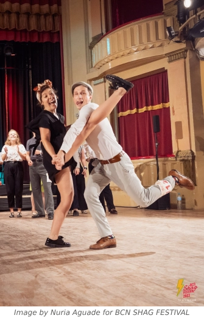
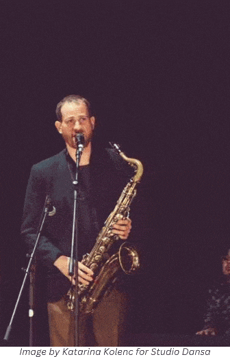
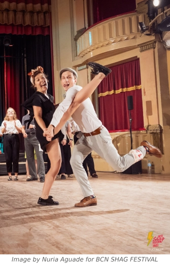
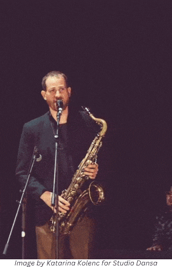

Teresa Fernández & Teis Volstrup
Teresa & Teis have shared their joy of Swing dancing since they met in 2022 in Munich, where they had the chance to teach together for several months in Vintage Club.
Soon it was clear that they had the same interest in live music and curiosity as jitterbugs and where live music was found in Munich those two would be the last to leave the dancefloor.
Teresa and Teis are truly energetic and made their first international statement together by placing 1st in the Endurance competition at Barcelona Shag Festival 2023 where they also placed 3rd in Strictly Shag and made it to the jitterbugs finals.
These two are pure jitterbugs and they are continuously searching for more ways to express themselves through dancing to swing music. Doesn't matter the style whether it being Collegiate Shag, Lindy Hop, Balboa, Charleston, Blues or simply mixing in and out of all them through the same song. And with a 1st place in the Jitterbugs Cup at Jitterbugs Delight in Basel 2024 they got even more motivated to continue this exciting journey together.
Even if they have a broad interest in different styles, Collegiate Shag has been one of their main languages to express to the music. With rhythm, groove and partner connection as their focus points.
Marion Forano & Sergej Götz
Marion’s swing dancing adventure kicked off in 2016, performing solo jazz, lindy hop, balboa, shag. With many years of experience in modern-jazz (11 years) and artistic gymnastic (16 years), she quickly developed her social dancing skills and partner-connection, eventually joining the Vintage Club Performance Teams. As a dancer she is creative and loves mixing all different styles together. While she won several international competitions in Collegiate Shag, Balboa and Lindy hop, Shag stays the dance that fits the most to her personality! Starting with her official teaching in 2021, she has now gained experienced in teaching all swing dances. In class, she likes to focus on partner connection as well as empowering dancers’ own individuality. But above all, her warmth and enthusiasm ensure that everyone feels comfortable, has fun, and shares a smile in class! Marion’s passion for teaching started at an early age with training competitive gymnasts of all ages, counselling and coaching children and adults in various sports and activities, with or without special needs. She is so invested in the and teaching of the different styles of dances, and understanding human movement, that she professionally graduated and is now working as a researcher on this topic. Altogether her practical and theoretical experience shapes her as a dance teacher, enhancing her approach and ability to connect with learners of all ages.
Sergej’s journey of swing dancing started in 2015 at the Vintage Club. Being surrounded by international dance teachers and the local legends Marcus and Bärbl who pushed him in Lindy hop, Shag, Balboa and Solo Jazz, he started teaching in 2017. Nowadays he’s teaching all the swing dances, but his main passion is Shag, because of its dynamics! Nevertheless, he still continues to visit local and international classes to learn new things. In competitions he got placed and won various international competitions. One of his favorites is the endurance contest where his childhood nickname of being an “Energizer bunny” still comes out. He’s part of the choreographing team in the Vintage Club Showgroup, who create mixed choreographies and perform them on multiple stages. His main goal is to spread the joy of dancing no matter which occasion it might be. Come to dance and have fun with him!
Swing Brigade
Swing Brigade are a swing sextet composed of old-school musicians from Zagreb, Croatia. They promise to deliver an energetic party full of hot rhythms, which are guaranteed to get you moving!
Franjo Stojaković - clarinet/saxophone
Mate Picukarić - trumpet
Hrvoje Štefanić - trombone
Diego Antonio Ortiz - piano
Ivan Džajić - double bass
Antun Profeta - drums